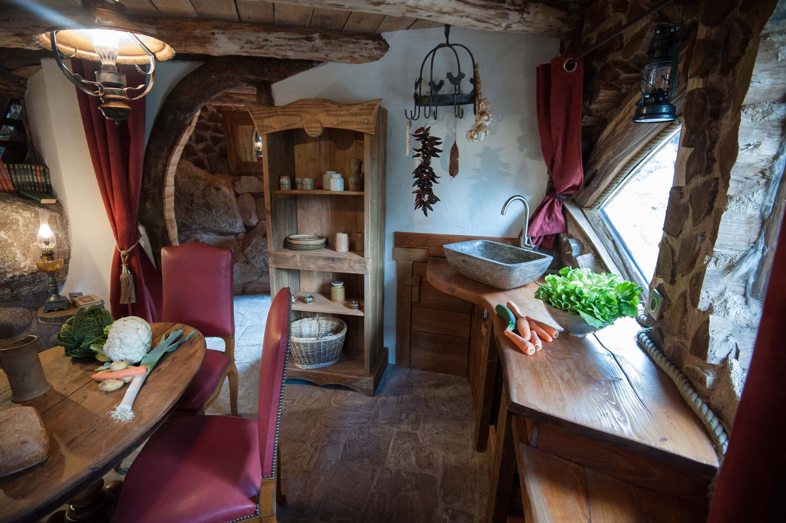

Construire son havre de paix
L'emplacement : Un coin de verdure pour renouer avec la nature
Un havre de paix, c’est toujours un lieu où l’on peut se connecter avec la nature. A vous de trouver le coin paisible parfait pour vous. Puis sentez-vous libre de l'entourer d'un espace de verdure. Créez par exemple un espace gazonneux et délimitez-le avec un mur végétal tel un hortensia grimpant, une vigne vierge ou un chèvrefeuille. Ou pourquoi ne pas bâtir un petit mur de pierre séparatif sur lequel grimperont des fougères. Vous pouvez aussi installer un hamac ou un lit de repos dans ce petit coin pour une invitation à la contemplation. Adossez votre lit à un grillage couvert de lierres. Installez-y un éclairage pour y passer vos soirées d’été. Un simple plan de verveine citronée éloignera les moustiques de autres indésirables de la zone.
Les matériaux : de pierre & de bois
A la manière du facteur Cheval, ramassez des matériaux autour de vous. Les pierres et le bois abondent dans la nature. Un mélange de terre argileuse et de cendre vous fournira un mortier naturel, étanche et robuste. Construire son havre de paix, c'est déjà bénéficier de son effet apaisant. Laissez-vous surprendre par l'action combinée de la pierre, du bois et de la verdure sur votre énergie, sur votre humeur, sur votre niveau de séreinité. Et, pierre après pierre, branche après branche, voyez grandir sous vos yeux le fruit de votre imagination.